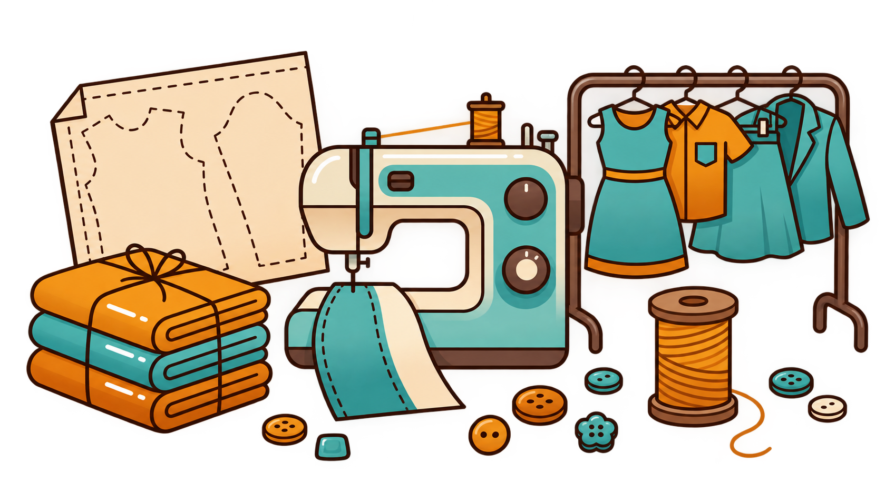
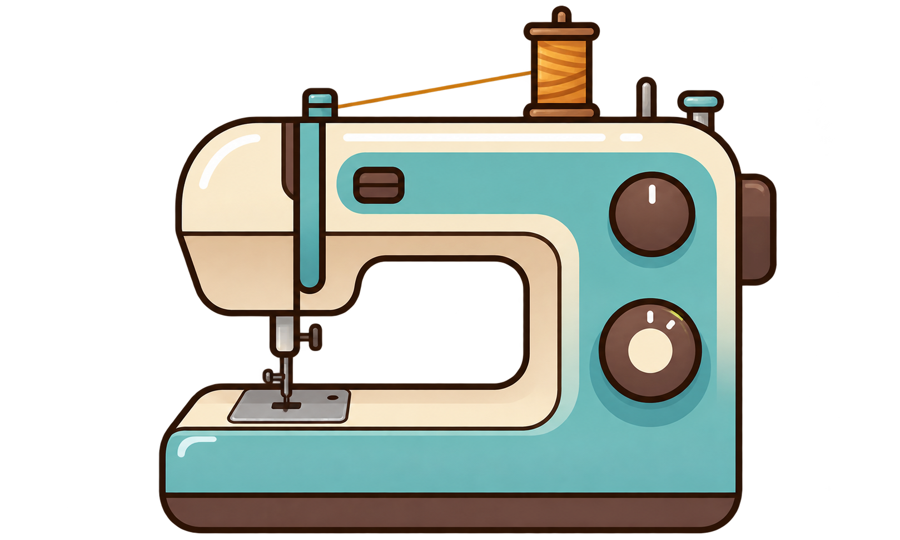

A digital twin for the sewing floor — every station, every operator, every minute of the shift, modeled before it runs.

Eight sewing operations on one conveyor — set sleeve, join shoulder, attach collar, topstitch, bar tack. Balance it wrong and one station drowns in work while the next sits idle, waiting on it.

Every operation carries its SMV, its machine, its place in the sequence. Move one and the precedence graph re-checks the whole line is still buildable.
Sign in and land exactly where the work is — no picker step. Each role gets its own color on the rack.
Sign in with a seeded account and the numbers are already there — two styles, four lines, a full roster, ready to balance.
Enter Seamline →